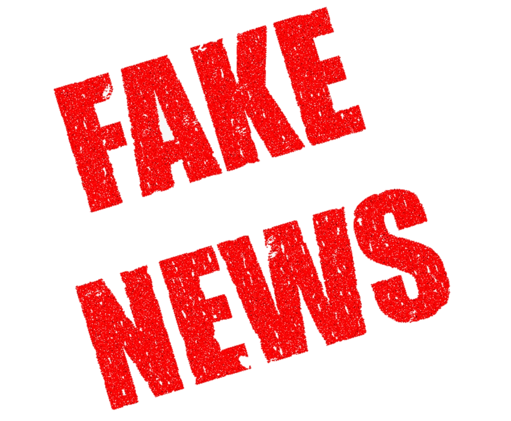
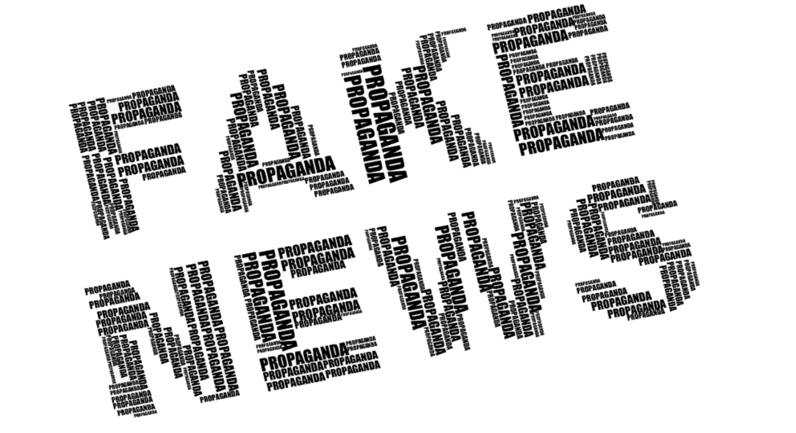

Rely On Us

Cum poti deosebi o stire falsa de una reala?
Știrile false nu sunt un fenomen nou, ci el există, poate sub alte
denumiri, de când lumea. Ce este nou însă este comportamentul nostru în
lumea digitală, ușurința și rapiditatea cu care putem împărtăși o
informație și nu în ultimul rând numărul mare de persoane la care putem
ajunge prin intermediul social media.
Iată doar câteva recomandări simple, pe care le putem pune în practică
fiecare dintre noi înainte de a distribui o informație în mediul online.
-
Păstrează o distanță critică în fața oricărei informații pe care o
primești mai ales în cazul situațiilor care nu pot fi verificate, atunci
când evenimentele despre care citești nu îți sunt cunoscute
-
Păstrează-ți reacțiile emoționale sub control – una dintre
caracteristicile unui fake news este tocmai apelul pe care îl face la o
emoție cum ar fi frica, furia, compasiunea, etc.
-
Concentrează-te pe modul în care interpretezi informația – accesează
puncte de vedere diferite, din mai multe surse, pentru a putea beneficia
de o informație cât mai completă
-
Verifică credibilitatea sursei și modul în care este prezentată
informația. O știre credibilă prezintă întotdeauna o mulțime de fapte,
citate ale experților, statistici, declarații oficiale, etc.
-
Nu orice imagine reprezintă adevărul. Alăturarea unei imagini sugestive
la un articol despre un anumit eveniment, are menirea de a impresiona
cititorul, de a genera un anumit comportament, o anumită reacție
emoțională. Poți folosi pentru verificare opțiunea de căutare inversă a
imaginii oferită de Google.
- Nu fii niciodată sigur 100%
